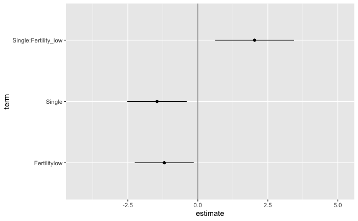
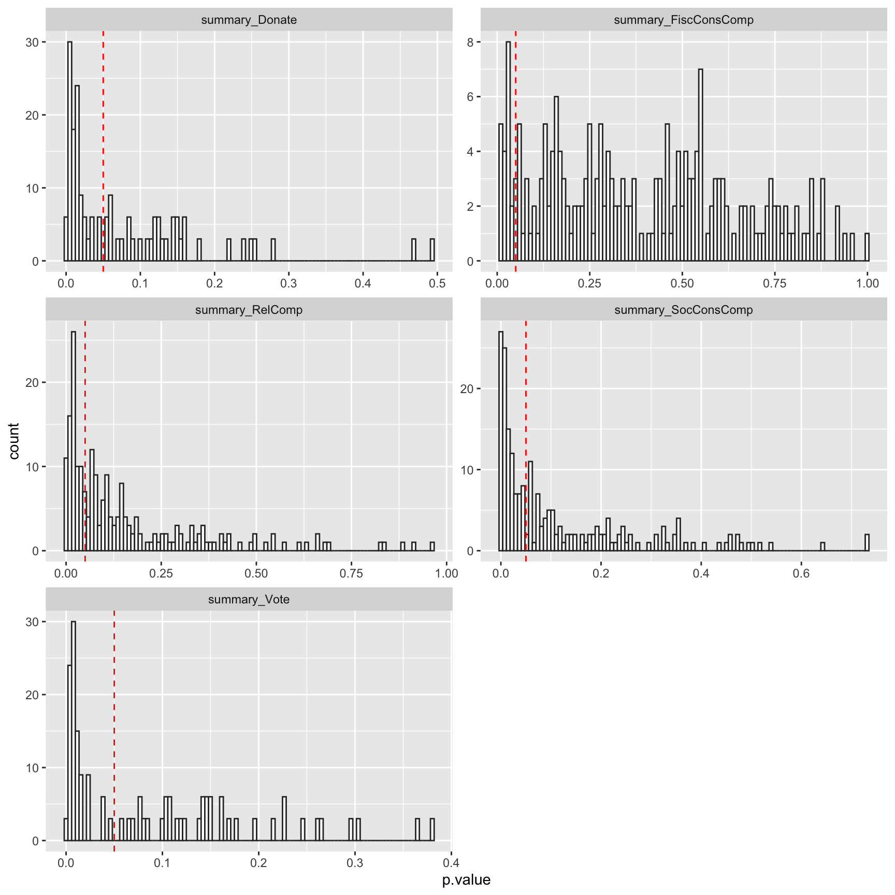
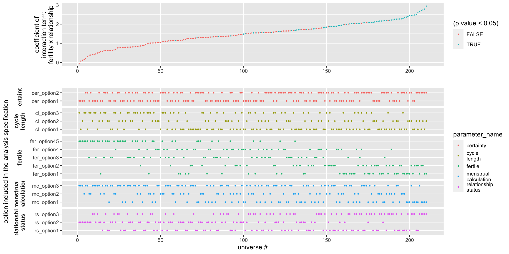
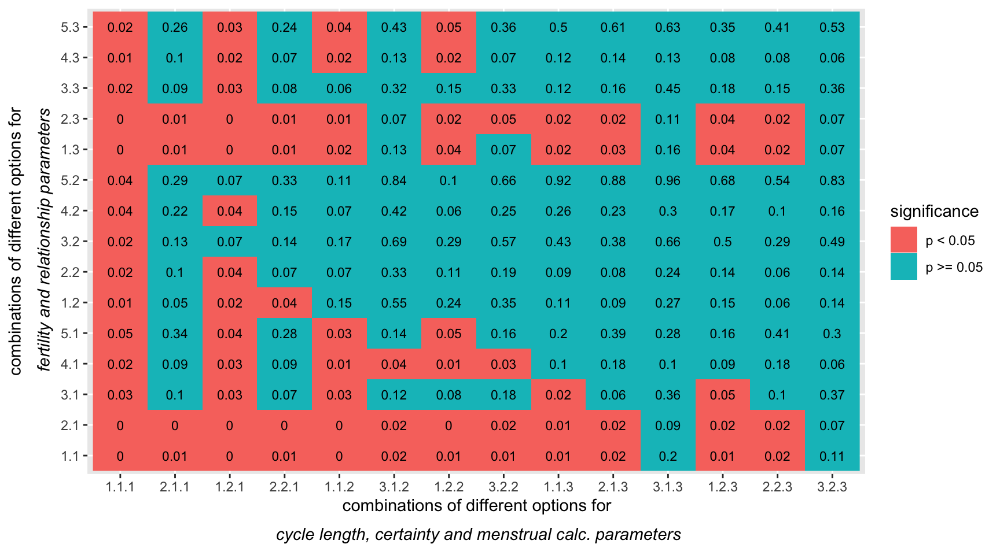

visualizing-multiverse.RmdIn this document, we show how you can extract results from the multiverse after performing a multiverse analysis. We also show some ways to visualize the results of a multiverse analysis. Because, a multiverse analysis consists of the results from hundreds or thousands of analysis, visualizing them can be difficult. We will show how our package can be used to create the visualizations by Steegen et al. in Increasing Transparency Through a Multiverse Analysis and Simonsohn et al. in Specification curve: Descriptive and inferential statistics on all reasonable specifications, as well as using other uncertainty visualization approaches.
We will be using the durante dataset.
data("durante")
data.raw.study2 <- durante %>%
mutate(
Abortion = abs(7 - Abortion) + 1,
StemCell = abs(7 - StemCell) + 1,
Marijuana = abs(7 - Marijuana) + 1,
RichTax = abs(7 - RichTax) + 1,
StLiving = abs(7 - StLiving) + 1,
Profit = abs(7 - Profit) + 1,
FiscConsComp = FreeMarket + PrivSocialSec + RichTax + StLiving + Profit,
SocConsComp = Marriage + RestrictAbortion + Abortion + StemCell + Marijuana
)A detailed description of this analysis can be found in A complete multiverse analysis. We will use the results from this analysis to create the visualizations.
M = multiverse()
M$df <- ~ data.raw.study2 %>%
mutate( ComputedCycleLength = StartDateofLastPeriod - StartDateofPeriodBeforeLast ) %>%
dplyr::filter( branch(cycle_length,
"cl_option1" ~ TRUE,
"cl_option2" ~ ComputedCycleLength > 25 & ComputedCycleLength < 35,
"cl_option3" ~ ReportedCycleLength > 25 & ReportedCycleLength < 35
)) %>%
dplyr::filter( branch(certainty,
"cer_option1" ~ TRUE,
"cer_option2" ~ Sure1 > 6 | Sure2 > 6
)) %>%
mutate(NextMenstrualOnset = branch(menstrual_calculation,
"mc_option1" %when% (cycle_length != "cl_option3") ~ StartDateofLastPeriod + ComputedCycleLength,
"mc_option2" %when% (cycle_length != "cl_option2") ~ StartDateofLastPeriod + ReportedCycleLength,
"mc_option3" ~ StartDateNext)
) %>%
mutate(
CycleDay = 28 - (NextMenstrualOnset - DateTesting),
CycleDay = ifelse(CycleDay > 1 & CycleDay < 28, CycleDay, ifelse(CycleDay < 1, 1, 28))
) %>%
mutate( Fertility = branch( fertile,
"fer_option1" ~ factor( ifelse(CycleDay >= 7 & CycleDay <= 14, "high", ifelse(CycleDay >= 17 & CycleDay <= 25, "low", NA)) ),
"fer_option2" ~ factor( ifelse(CycleDay >= 6 & CycleDay <= 14, "high", ifelse(CycleDay >= 17 & CycleDay <= 27, "low", NA)) ),
"fer_option3" ~ factor( ifelse(CycleDay >= 9 & CycleDay <= 17, "high", ifelse(CycleDay >= 18 & CycleDay <= 25, "low", NA)) ),
"fer_option4" ~ factor( ifelse(CycleDay >= 8 & CycleDay <= 14, "high", "low") ),
"fer_option45" ~ factor( ifelse(CycleDay >= 8 & CycleDay <= 17, "high", "low") )
)) %>%
mutate(RelationshipStatus = branch(relationship_status,
"rs_option1" ~ factor(ifelse(Relationship==1 | Relationship==2, 'Single', 'Relationship')),
"rs_option2" ~ factor(ifelse(Relationship==1, 'Single', 'Relationship')),
"rs_option3" ~ factor(ifelse(Relationship==1, 'Single', ifelse(Relationship==3 | Relationship==4, 'Relationship', NA))) )
)
M$df <- ~ df %>%
mutate( RelComp = round((Rel1 + Rel2 + Rel3)/3, 2))Steegen et al. analyse the data using 6 models. All the models except the first use this dataset. For the visualizations, we will focus on the effect of Fertility and Relationship status on Religiosity.
The authors perform an ANOVA to study the effect of Fertility, Relationship and their interaction term, on the composite Religiosity score (RelComp). We perform this analysis and extract the results from the multiverse into a tidy data frame.
M$fit_RelComp <- ~ lm( RelComp ~ Fertility * RelationshipStatus, data = df )
M$fit_FiscConsComp <- ~ lm( FiscConsComp ~ Fertility * RelationshipStatus, data = df)
M$fit_SocConsComp <- ~ lm( SocConsComp ~ Fertility * RelationshipStatus, data = df)
M$fit_Donate <- ~ glm( Donate ~ Fertility * Relationship, data = df, family = binomial(link = "logit") )
M$fit_Vote <- ~ glm( Vote ~ Fertility * Relationship, data = df, family = binomial(link = "logit") )In most analysis, you would then look at the results using the summary function. However, when performing a multiverse analysis, the summary would be executed in each universe of the multiverse, and would not be accessible outside each universe. However, there are ways to easily extract the results from each universe, as long as the results within each universe are as tidy data.
The broom package allows extracting the summary of most linear models using the tidy() function. The tidy method summarises information about the components of a model including the estimates, std. error, t-statistic, p-value for each coefficient and returns a tibble (a tidy data frame). Additional arguments can be passed to obtain the upper and lower 95% confidence limits, or to change the confidence level.
We will execute this in the multiverse.
M$summary_RelComp <- ~ fit_RelComp %>%
broom::tidy( conf.int = TRUE )
M$summary_FiscConsComp <- ~ fit_FiscConsComp %>%
broom::tidy( conf.int = TRUE )
M$summary_SocConsComp <- ~ fit_SocConsComp %>%
broom::tidy( conf.int = TRUE )
M$summary_Donate <- ~ fit_Donate %>%
broom::tidy( conf.int = TRUE )
M$summary_Vote <- ~ fit_Vote %>%
broom::tidy( conf.int = TRUE )
execute_multiverse(M)All the computed summaries (summary_RelComp, summary_FiscConsComp, summary_SocConsComp, summary_Donate and summary_Vote) are stored within .results column (a separate environment) in the multiverse table. We can extract these summaries as a tibble using and store it in a separate column, and then unnest this new column:
## # A tibble: 840 x 13
## .universe cycle_length certainty menstrual_calcu… fertile
## <int> <chr> <chr> <chr> <chr>
## 1 1 cl_option1 cer_opti… mc_option1 fer_op…
## 2 1 cl_option1 cer_opti… mc_option1 fer_op…
## 3 1 cl_option1 cer_opti… mc_option1 fer_op…
## 4 1 cl_option1 cer_opti… mc_option1 fer_op…
## 5 2 cl_option2 cer_opti… mc_option1 fer_op…
## 6 2 cl_option2 cer_opti… mc_option1 fer_op…
## 7 2 cl_option2 cer_opti… mc_option1 fer_op…
## 8 2 cl_option2 cer_opti… mc_option1 fer_op…
## 9 4 cl_option1 cer_opti… mc_option1 fer_op…
## 10 4 cl_option1 cer_opti… mc_option1 fer_op…
## # … with 830 more rows, and 8 more variables: relationship_status <chr>,
## # term <chr>, estimate <dbl>, std.error <dbl>, statistic <dbl>,
## # p.value <dbl>, conf.low <dbl>, conf.high <dbl>We can then use various R packages to visualize the results. Below, we show some standard visualizations.
One way to visualize over the multiverse is to animate over the results from each universe in the multiverse. This approach, inspired by the concept of Hypothetical Outcome plots was described by Dragicevic et al. in Increasing the Transparency of Research Papers with Explorable Multiverse Analyses. This approach allows us to quickly see the robustness of a result — if a particular result is consistent across all analysis paths or idiosyncratic to a specific analysis path.
p <- multiverse_table(M) %>%
unnest( map(.results, "summary_RelComp" ) ) %>%
mutate( term = recode( term,
"RelationshipStatusSingle" = "Single",
"Fertilitylow:RelationshipStatusSingle" = "Single:Fertility_low"
) ) %>%
filter( term != "(Intercept)" ) %>%
ggplot() +
geom_vline( xintercept = 0, colour = '#979797' ) +
geom_point( aes(x = estimate, y = term)) +
geom_errorbarh( aes(xmin = conf.low, xmax = conf.high, y = term), height = 0) +
transition_manual( .universe )
animate(p, nframes = 210, fps = 2)
Another approach would be to summarise the results. Steegen et al. which depicts a histogram of p values of the Fertility × Relationship status interaction on religiosity for the multiverse of 210 data sets in Study 2 (summary_RelComp), on fiscal and social political attitudes for the multiverse of 210 data sets in Study 2 (summary_FiscConsComp and summary_SocConsComp), and on voting and donation preferences for the multiverse of 210 data sets in Study 2 (summary_Donate and summary_Vote). The dashed line indicates p = 0.05.
Below we show how to re-create the visualization.
multiverse_table(M) %>%
mutate( index = seq(1:nrow(.)) ) %>%
mutate(
summary_RelComp = map(.results, "summary_RelComp" ),
summary_FiscConsComp = map(.results, "summary_FiscConsComp" ),
summary_SocConsComp = map(.results, "summary_SocConsComp" ),
summary_Donate = map(.results, "summary_Donate" ),
summary_Vote = map(.results, "summary_Vote" )
) %>%
select( summary_RelComp:summary_Vote ) %>%
gather( "analysis", "result" ) %>%
unnest(result) %>%
filter( term == "Fertilitylow:RelationshipStatusSingle" | term == "Fertilitylow:Relationship") %>%
ggplot() +
geom_histogram(aes(x = p.value), bins = 100, fill = "#ffffff", color = "#333333") +
geom_vline( xintercept = 0.05, color = "red", linetype = "dashed") +
facet_wrap(~ analysis, scales = "free", nrow = 3)
Simonsohn et al. propose visualizing results from the multiverse as a specification curve, which consists of two panels. The top panel shows the effect size (here the value of a coefficient) for each universe (or specification). The bottom panel shows which specification of the parameters results in that result.
data.spec_curve <- multiverse_table(M) %>%
unnest( map(.results, "summary_RelComp" ) ) %>%
filter( term == "Fertilitylow:RelationshipStatusSingle" ) %>%
select( .universe, !! names(parameters(M)), estimate, p.value ) %>%
arrange( estimate ) %>%
mutate( .universe = 1:nrow(.))
p1 <- data.spec_curve %>%
gather( "parameter_name", "parameter_option", !! names(parameters(M)) ) %>%
select( .universe, parameter_name, parameter_option) %>%
mutate(
parameter_name = factor(str_replace(parameter_name, "_", "\n"))
#parameter_option = fct_relevel(factor(parameter_option), "relationship status", after = Inf)
) %>%
ggplot() +
geom_point( aes(x = .universe, y = parameter_option, color = parameter_name), size = 0.5 ) +
labs( x = "universe #", y = "option included in the analysis specification") +
facet_grid(parameter_name ~ ., space="free_y", scales="free_y", switch="y") +
theme(strip.placement = "outside",
strip.background = element_rect(fill=NA,colour=NA),
panel.spacing.x=unit(0.15,"cm"),
strip.text.y = element_text(angle = 180, face="bold", size=10),
#legend.position = "none",
panel.spacing = unit(0.25, "lines")
)
p2 <- data.spec_curve %>%
ggplot() +
geom_point( aes(.universe, estimate, color = (p.value < 0.05)), size = 0.25) +
labs(x = "", y = "coefficient of\ninteraction term:\nfertility x relationship")
cowplot::plot_grid(p2, p1, axis = "bltr", align = "v", ncol = 1, rel_heights = c(1, 2))
Incomplete
multiverse_table(M) %>%
mutate( index = seq(1:nrow(.)) ) %>%
unnest( map(.results, "summary_RelComp" ) ) %>%
filter( term == "Fertilitylow:RelationshipStatusSingle" ) %>%
mutate(
cycle_length = as.numeric(factor(cycle_length)),
certainty = as.numeric(factor(certainty)),
menstrual_calculation = as.numeric(factor(menstrual_calculation)),
fertile = as.numeric(factor(fertile)),
relationship_status = as.numeric(factor(relationship_status)),
significance = ifelse(p.value < 0.05, "p < 0.05", "p >= 0.05")
) %>%
ggplot(aes(x = interaction(cycle_length, certainty, menstrual_calculation),
y = interaction(fertile, relationship_status))) +
geom_raster( aes(fill = significance) ) +
geom_text( aes(label = round(p.value, 2)), size = 3 ) +
labs(
x = expression(atop("combinations of different options for", ~italic("cycle length, certainty and menstrual calc."~"parameters"))),
y = expression(atop("combinations of different options for", ~italic("fertility and relationship"~"parameters")))
)